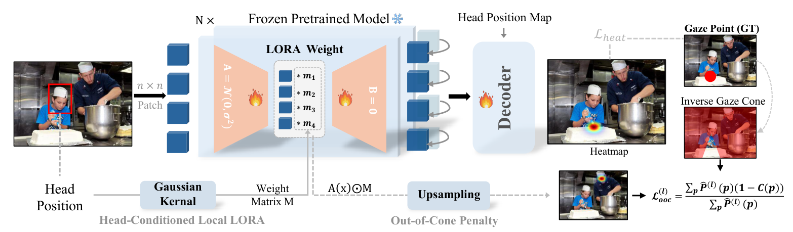
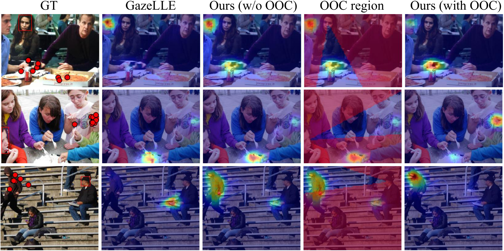

Head-conditioned local LoRA
The queried head position modulates low-rank residual updates inside the vision foundation model, concentrating adaptation on the features needed for gaze reasoning.
* Corresponding authors
Ground truth, GazeLLE and HCLoRA on GazeFollow. Ten examples cycle every two seconds, showing how gaze cues help distinguish the true target from semantically salient regions.
Gaze following requires both scene understanding and gaze reasoning to localize the gaze target of an in-scene person. Recently, vision foundation models (VFMs) have demonstrated strong performance on this task, enabling simpler architectures while outperforming prior methods. However, we observe a key limitation of VFM-based approaches: while VFMs substantially improve scene understanding, they contribute little to gaze reasoning. As a result, existing methods often rely on semantically salient objects rather than true gaze cues, leading to degraded performance when targets are not salient.
To address this, we propose a novel training mechanism to enhance gaze reasoning in VFMs for gaze following. Our method includes: (1) a head-conditioned local LoRA, which enables localized adaptation to preserve scene token learning while improving head token learning for gaze reasoning; and (2) an out-of-cone penalty, which injects gaze cues into head tokens while aligning them with scene tokens. Experiments on the GazeFollow and VAT datasets demonstrate that our method achieves state-of-the-art performance, with particularly strong improvements when gaze targets are not semantically salient. Our findings offer valuable insights for advancing future gaze following research.
Localized adaptation. Gaze-aware supervision. A frozen vision backbone.

The queried head position modulates low-rank residual updates inside the vision foundation model, concentrating adaptation on the features needed for gaze reasoning.
During training, auxiliary gaze-evidence maps are penalized for probability mass outside a plausible gaze cone, discouraging gaze-inconsistent evidence without requiring a rigid target distribution.
Performance on semantically consistent and inconsistent gaze targets.
| Method | Consistent | Inconsistent | ||||
|---|---|---|---|---|---|---|
| AUC ↑ | Avg L2 ↓ | Min L2 ↓ | AUC ↑ | Avg L2 ↓ | Min L2 ↓ | |
| GazeLLE | 0.9689 | 0.0834 | 0.0373 | 0.9270 | 0.1519 | 0.0664 |
| GazeLLE + LoRA | 0.9700 | 0.0789 | 0.0352 | 0.9308 | 0.1487 | 0.0667 |
| HCLoRA (ViT-B) | 0.9696 | 0.0777 | 0.0348 | 0.9340 | 0.1353 | 0.0547 |
| HCLoRA (ViT-L) | 0.9719 | 0.0709 | 0.0301 | 0.9371 | 0.1271 | 0.0498 |
| Method | All in-frame | Inconsistent | In/out AP ↑ | ||
|---|---|---|---|---|---|
| AUC ↑ | L2 ↓ | AUC ↑ | L2 ↓ | ||
| GazeLLE | 0.9347 | 0.1071 | 0.9059 | 0.1670 | 0.8979 |
| GazeLLE + LoRA | 0.9307 | 0.1077 | 0.9037 | 0.1637 | 0.8775 |
| HCLoRA (ViT-B) | 0.9352 | 0.1006 | 0.9064 | 0.1513 | 0.8988 |
| HCLoRA (ViT-L) | 0.9387 | 0.0951 | 0.9066 | 0.1459 | 0.9068 |
Compared with GazeLLE, HCLoRA lowers localization error on both benchmarks, with larger L2 reductions on semantically inconsistent targets.
Selected comparisons from the paper and released repository. Higher AUC/AP and lower L2 are better. The released checkpoints correspond to ViT-B; see the paper for full comparisons and angular errors.
Head-conditioned adaptation and gaze-aware supervision work together.

@article{wang2026enhancing,
title={Enhancing Gaze Reasoning in Vision Foundation Models for Gaze Following},
author={Wang, Shijing and Huang, Yaping and Cui, Chaoqun and Wong, David
and Cheng, Yihua and Neophytou, Alexandros and Chang, Hyung Jin},
journal={arXiv preprint arXiv:2605.22607},
year={2026},
doi={10.48550/arXiv.2605.22607},
url={https://arxiv.org/abs/2605.22607}
}